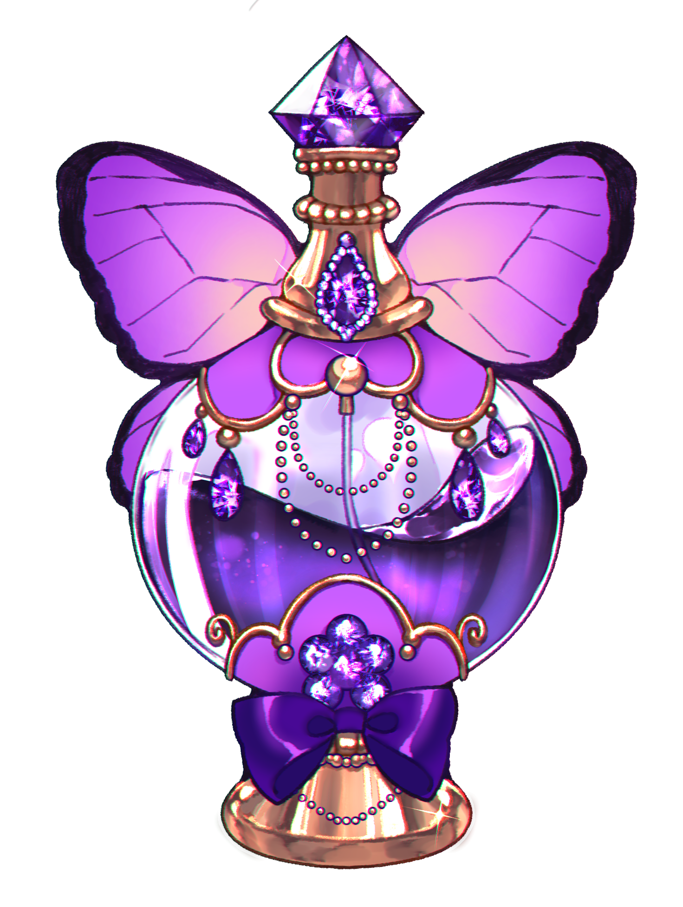
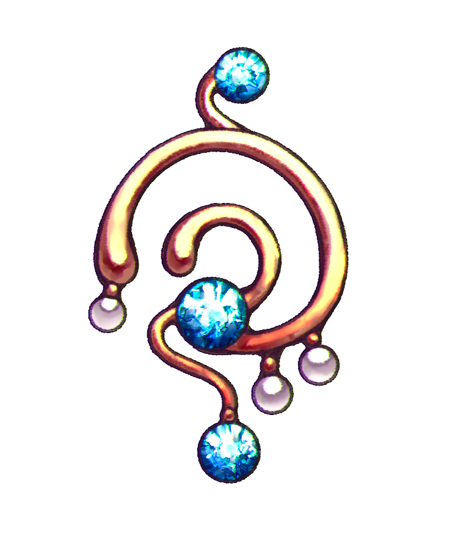

About Bottle Nymphs
Bottle Nymphs is an online art RPG created entirely by Lumisha (Sunnie Wykert). The game takes place in Azuris, a city that is hidden deep under the ocean within a cavern protected by a deadly maelstrom.The elves who live in this city, called the Nereths, help aid the water nymphs of their home gain freedom to roam the Earth in return for their magic.
How A Water Nymph Becomes A Bottle Nymph
The Nereths discovered that the water nymphs could have spiritual connections to gemstones. If they meld a gemstone chestpiece that is adorned with gold onto a water nymph's chest, they could create a link to a delicate bottle that is adorned by that very same gemstone.
The "Soul Link"
The soul link is used to describe the phenomenon where a water nymph "links" her soul via a gemstone from her chest to her designed bottle.
Bottle Contents
Each bottle designed for a water nymph must contain her home's water in order for her to gain freedom. Without it, she will remain bound to her source.
Special Effects
Additions can be added to the water content, such as a perfume scent or an elixir essence. These additions can heavily affect those who come in contact with the Bottle Nymph, such as becoming charmed or by simply gaining a temporary buff.


To Become A Bottle Nymph
A water nymph must first make a few decisions before fully becoming a Bottle Nymph. They must first:
- Choose a pillar to follow (Elixir or Perfume)
- Choose a gemstone to create a soul link
- Choose their bottle scent or essence